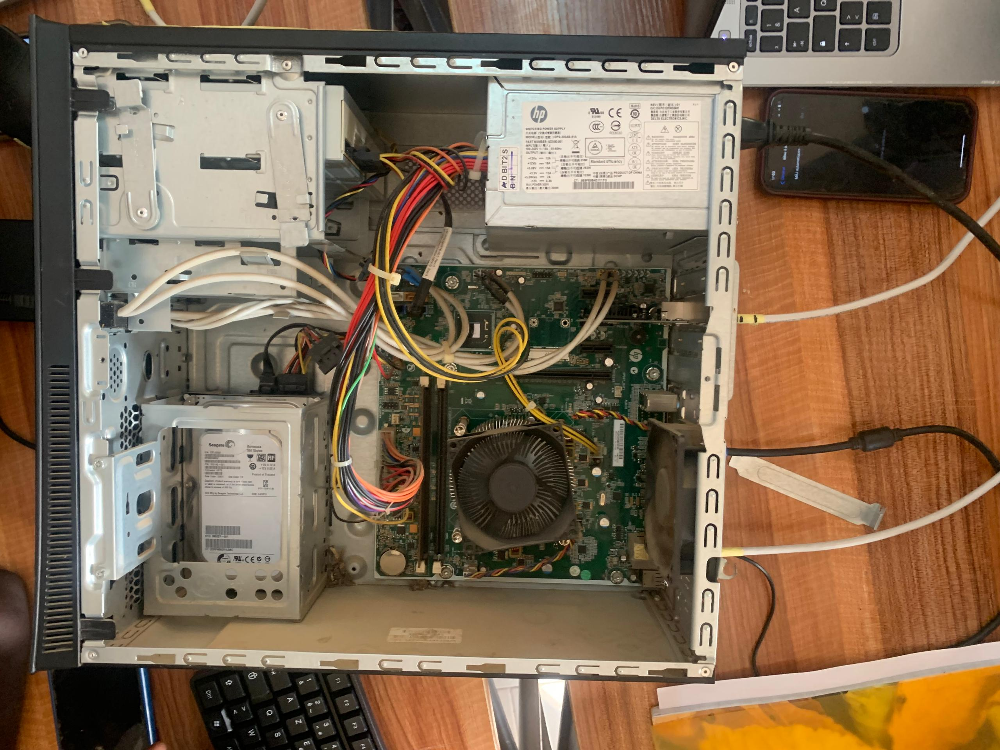
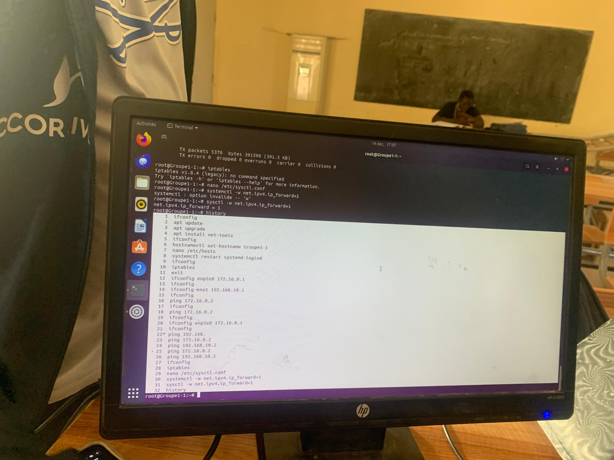

Pare-feu avec iptables sur UC recyclée
Création d’un firewall matériel sur une vieille unité centrale, placé entre le réseau local et Internet.
Création d’un firewall matériel sur une vieille unité centrale, placé entre le réseau local et Internet.
Ce projet consiste à mettre en place un pare-feu matériel sous Linux avec iptables, pour protéger un réseau local contre les attaques et contrôler le trafic entrant/sortant. L’objectif est de recycler une ancienne unité centrale pour en faire un firewall performant et économique.
# Politique par défaut : tout bloquer
iptables -P INPUT DROP
iptables -P FORWARD DROP
iptables -P OUTPUT ACCEPT
# Autoriser le trafic local
iptables -A INPUT -i lo -j ACCEPT
# Autoriser SSH depuis le LAN
iptables -A INPUT -p tcp --dport 22 -s 192.168.1.0/24 -j ACCEPT
# Autoriser HTTP/HTTPS sortant
iptables -A OUTPUT -p tcp -m multiport --dports 80,443 -j ACCEPT
# Refuser les paquets invalides
iptables -A INPUT -m state --state INVALID -j DROP

